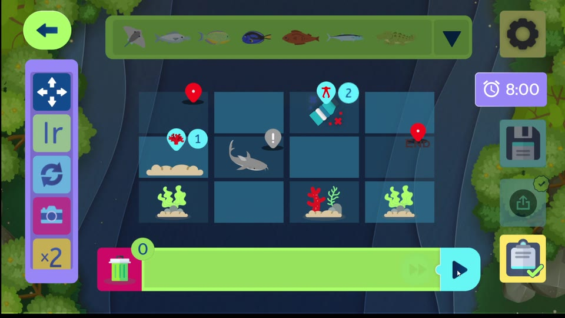

Designs that tell stories
I design experiences that connect with people, and bring them to life with development.
- Figma
- Unity
- Unreal Engine
- HTML/CSS
- Adobe
Projects
Universo Maloka
Team Project
In this gamified map app for the interactive science and technology museum Maloka, I collaborated with UI Art and Prototypes to help families find the exhibits quicker.

Necronomicón
Solo Project
For this lovecraftian-inspired app, I designed and prototyped UI to solve pain points in table top RPG players' journey.

Umbrella Corp Web
Solo Project
I created unique iconography and followed the client's visual identity in a website tailored with responsive design. The goal was to take a fictional corporation and bring it to life.

Neuronautas
Team Project
To promote appreciation for the neurodivergence spectrum, I cooperated with Paper Prototyping and UI Implementation to create this interactive arduino experience.
[ poster pending ]
GreenCode: Play & Learn
Case Study
Read more
For this educational mobile and desktop app, I prototyped UX improvements for a new level editor feature. I also collaborated closely with the client & production to redesign game mechanics within a block-based programming language that teaches computational thinking to children and teenagers.
Guitar Hero III — UI Redesign
Case Study
Read more
For this project, I took on a challenge to improve the navigation and usability on the HUD, Pause and Main Menu screens while modernizing the iconic original style.


Kungatá
Team Project
In this action-based roguelike I designed game mechanics, implemented menus & dynamic UI, and developed Enemy AI, dialogue systems and object interaction in Unity.

See anything you like?
Let's have a chat!